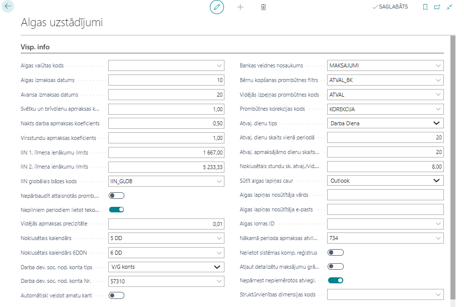
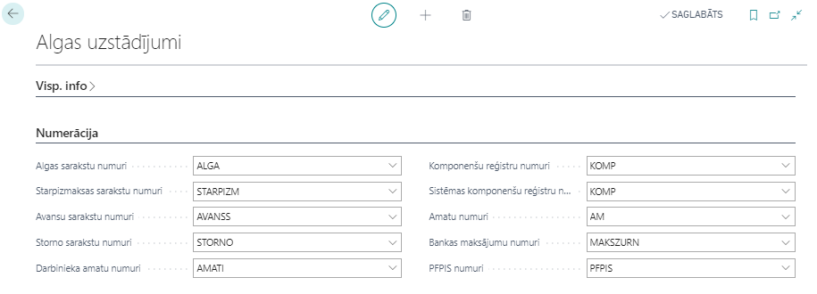
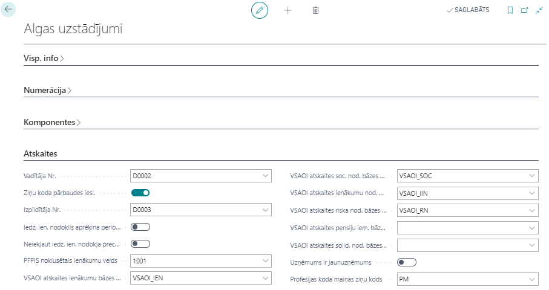
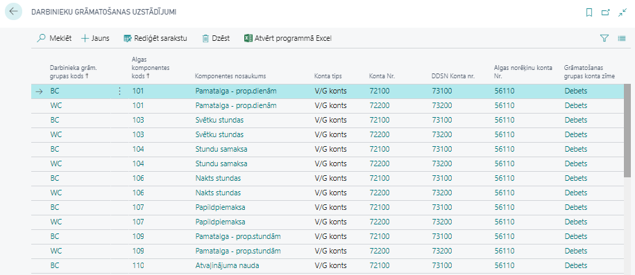
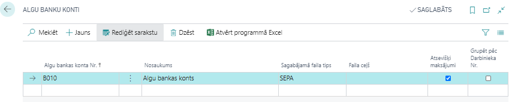

Algu uzstādījumi
Šajā nodaļā ir apkopoti uzstādījumi algu uzskaites vajadzībām.
Ielādējot konfigurācijas pakotni standarta uzstādījumi jau ir aizpildīti, tomēr rekomendējam pārskatīt visus uzstādījumus atbilstoši jūsu uzņēmuma vajadzībām.
Algas uzstādījumi
Cilne: Vispārīgā informācija

| Lauka nosaukums | Apraksts |
|---|---|
| Algas valūtas kods | Norāda algas valūtas kodu. Gadījumā, ja algas tiek rēķinātas vietējā valūtā, tad lauks nav jāaizpilda. |
| Algas izmaksas datums | Norāda algas izmaksas datumu, kurš parādās algas saraksta virsrakstā un EDS atskaitē Ziņojums par VSOAI. |
| Avansa izmaksas datums | Norāda avansa izmaksas datumu, kurš parādās avansa saraksta virsrakstā. |
| Svētku un brīvdienu apmaksas koeficients | Koeficientu izmanto, lai aprēķinātu piemaksu par darba stundām svētku dienās un brīvdienās. |
| Nakts darba apmaksas koeficients | Koeficientu izmanto, lai aprēķinātu piemaksu par nakts darba stundām. |
| Virsstundu apmaksas koeficients | Koeficientu izmanto, lai aprēķinātu piemaksu par nostrādātajām virsstundām. |
| IIN 1. līmeņa ienākumu limits | 1. līmeņa limits. |
| IIN 2. līmeņa ienākumu limits | 2. līmeņa limits darbiniekiem, kuriem A1 sertifikāts. |
| IIN globālais bāzes kods | Tiek izmantots atvieglojumu pārejai uz citu līmeni. |
| Nepārbaudīt attaisnotās promb. 12M vid. izpeļņā | Šī pazīme darbojas, ja ielikta otra pazīme “Nepilniem periodiem lietot tekošo mēnesi vid. izpeļņai”. Ja pazīme nav ielikta, tad tekošais mēnesis netiek paņemts, ja attaisnotās prombūtnes ilgums ir mazāk par 12 mēnešiem, bet gadījumā ja prombūtnes ilgums ir vairāk par 12 mēnešiem, tekošais mēnesis tiks iekļauts vidējās izpeļņas aprēķinā. |
| Nepilniem periodiem lietot tekošo mēnesi vid. izpeļņai | Ja ir ielikta atzīme šajā laukā, tad vidējās izpeļņas aprēķinam Sistēma vispirms pārbauda iepriekšējos 6 kalendāros mēnešus. Ja iepriekšējos 6 kalendāros mēnešos ir bijušas darba stundas, tad sistēma pārbauda pirmo kalendāro mēnesi (no šī 6 mēnešu perioda). Ja pirmajā mēnesī nav bijušas stundas – sistēma uzskata, ka tas ir nepilns periods un vidējās izpeļņas aprēķinam izmanto arī tekošo mēnesi. Ja pirmajā mēnesī ir bijušas stundas – vidējās izpeļņas aprēķinam tiek izmantoti iepriekšējie 6 kalendārie mēneši. Ja iepriekšējos 6 kalendāra mēnešos nav bijušas darba stundas, tad sistēma pārbauda iepriekšējos 12 kalendāra mēnešus. Ja iepriekšējos 12 kalendāros mēnešos ir bijušas darba stundas, tad Sistēma pārbauda pirmo kalendāro mēnesi (no šī 12 mēnešu perioda). Ja pirmajā mēnesī nav bijušas stundas – Sistēma uzskata, ka tas ir nepilns periods un vidējās izpeļņas aprēķinam izmanto arī tekošo mēnesi. Ja pirmajā mēnesī ir bijušas stundas – vidējās izpeļņas aprēķinam tiek izmantoti iepriekšējie 12 kalendārie mēneši. Ja iepriekšējos 12 kalendāra mēnešos nav bijušas darba stundas, tad Sistēma vidējās izpeļņas aprēķinam izmanto tikai tekošā mēneša datus. Ja nav bijušas darba stundas iepriekšējos 12 kalendāra mēnešos, kā arī tekošajā mēnesī – vidējās izpeļņas aprēķinam tiks izmantota iepriekšējo 6 kalendāra mēnešu minimālā alga. |
| Vidējās apmaksas precizitāte | Norāda precizitāti (zīmes aiz komata), ar kādu vidējā izpeļņa tiks izmantota aprēķinos. |
| Noklusētais kalendārs | Valsts noteiktais kalendārs 5 darba dienu nedēļai. |
| Noklusētais kalendārs 6DDN | Valsts noteiktais kalendārs 6 darba dienu nedēļai. |
| Darba dev. soc. nod. konta tips | Norāda konta tipu, kurā tiks grāmatots aprēķinātais darba devēja sociālais nodoklis. |
| Darba dev. soc. nod. konta Nr. | Norāda kontu, kurā tiks grāmatots aprēķinātais darba devēja sociālais nodoklis. |
| Automātiski veidot amatu karti | Ja ir atzīme šajā laukā, tad veidojot jaunu darbinieku, automātiski veidosies arī amata karte. |
| Bankas veidnes nosaukums | Norāda žurnālu, caur kuru tiks veikti algas maksājumi no bankas konta. |
| Bērnu kopšanas prombūtnes filtrs | Atbilstošais prombūtnes kods. |
| Vidējās izpeļņas prombūtnes kods | Prombūtnes kods vidējai izpeļņai. |
| Prombūtnes korekcijas kods | Kods, ar kādu atrādās Algu pārrēķina rindas Prombūtnes reģistrācijā. |
| Atvaļ. dienu tips | Norāda, kā uzskaita atvaļinājuma dienas - Darba dienās vai Kalendārajās dienās. |
| Atvaļ. dienu skaits vienā periodā | Norāda atvaļinājuma dienu skaitu, kas pienākas katram darbiniekam vienā periodā. |
| Atvaļ. apmaksājamo dienu skaits vienā periodā | Norāda apmaksājamo atvaļinājuma dienu skaitu, kas pienākas katram darbiniekam vienā periodā. |
| Noklusētais stundu sk. atvaļ./vid.izp. aprēķiniem | Norāda noklusēto vienas dienas stundu skaitu, kurš tiek izmantots kompensācijas aprēķinos, kā arī vid. izpeļņā. |
| Sūtīt algas lapiņas caur | Norāda vedu, kā tiks sūtītas algu lapiņas – Outlook vai SMTP protokols. SMTP gadījumā aizpilda sekojošos laukus. |
| Algas lapiņas nosūtītāja vārds | Norāda vārdu, kas izsūta algu lapiņas. |
| Algas lapiņas nosūtītāja e-pasts | Norāda e-pastu, caur kuru algu lapiņas tiek izsūtītas. |
| Algas lomas ID | Norāda to algas lomu, kura dod tiesības redzēt visu informāciju darbinieka kartiņā. Norāda tikai tajā gadījumā, ja nepieciešams lietotāju nodalījums ar pilnu un daļēju piekļuvi. |
| Nākamā perioda apmaksas atvilkums | Komponente, kas tiek lietota storno risinājumā. Gadījumā, ja no algas saraksta jau veikta izmaksa, tad tekošā mēneša nākamajā algu sarakstā šī izmaksa tiks uzskaitīta zem noradīta algas komponentes koda. |
| Nelietot sistēmas komp. reģistrus | Norāde, ka algu aprēķinos netiks lietoti sistēmas radītie komponenšu reģistri. Gadījumā, ja ir nepieciešamas korekcijas, un ielikts ķeksis “Nelietot” , aprēķinot, tiek paradīti paziņojumi par korekcijām, bet reģistrs netiks veidots. |
| Atļaut detalizētu maksājumu grāmatošanu | Atzīme šajā laukā norāda uz to, ka algu maksājums tiks grāmatots detalizēti, nevis grupēts viss vienā summā; algu maksājumus eksportē uz maksājumu žurnālu un lietotājs var iegrāmatot ar standarta grāmatojumu par katru darbinieku atsevišķi. Tādā gadījumā VG var redzēt, cik katrs saņem. Tādēļ tika uztaisīta otra grāmatošanas funkcija algām, kura var sagrupēt pa dimensijām un tad iegrāmatot maksājumus. Lai lietotājs nevarētu izmantot algu maksājumiem standarta grāmatošanu pa katru žurnāla rindu, ir šis uzstādījums, kas to aizliedz. |
| Nepārnest nepiemērotos atviegl. | Norāde, ka nepiemērotie atvieglojumi netiks pārnesti uz nākošo mēnešu algu aprēķiniem; Nepiemērotie atvieglojumi tiek pārnesti caru komponenšu reģistru, kas tiek izveidots aprēķina brīdī. Ja aprēķina brīdī bija pazīme, ka nevajag pārnest nepiemērotos atvieglojumus, tad arī nebūs komponenšu reģistra ieraksta un nākamajā mēnesī tie netiks ņemti vērā. |
| Struktūrvienības dimensijas kods | Norāda noklusēto dimensijas kodu |
Cilne: Numerācija

| Lauka nosaukums | Apraksts |
|---|---|
| Algas sarakstu numuri | Norāda algu sarakstu Nr. sēriju. |
| Starpizmaksas sarakstu numuri | Norāda starpizmaksas Nr. sēriju. |
| Avansu sarakstu numuri | Norāda avansu sarakstu Nr. sēriju. |
| Storno sarakstu numuri | Norāda storno sarakstu Nr. sēriju. |
| Darbinieka amatu numuri | Norāda darbinieka amatu Nr. sēriju. |
| Komponenšu reģistru numuri | Norāda algas komponenšu reģistra Nr. sēriju. |
| Sistēmas komponenšu reģistru numuri | Norāda sistēmas komponenšu reģistru Nr. sēriju. |
| Amatu numuri | Norāda sistēmas amatu reģistra Nr. sēriju. |
| Kases maksājumu numuri | Norāda kases maksājumu Nr. sēriju. |
| Bankas maksājumu numuri | Norāda bankas algu maksājumu Nr. sēriju. |
| PFPIS numuri | Norāda Paziņojuma par fiziskai personai izmaksātām summām dokumentu nr. sēriju. |
Cilne: Komponentes
| Lauka nosaukums | Apraksts |
|---|---|
| Avansa atvilkuma komponentes kods | Norādītā komponente no avansu saraksta ievilksies algu sarakstā kā atvilkums. |
| Starpizmaksu atvilkuma komponentes kods | Norādītā komponente no Starpizmaksu saraksta ievilksies algu sarakstā kā atvilkums. |
| Minimālās algas komponentes kods | Norāda minimālās algas komponenti. |
| Negatīvas izmaksas komponentes kods | Norāda negatīvās izmaksas komponenti. |
Cilne: Atskaites

| Lauka nosaukums | Apraksts |
|---|---|
| Vadītāja Nr. | Norāda personu, kas parakstīsies algu atskaitēs kā vadītājs. |
| Ziņu koda pārbaudes iesl. | Pārbauda ziņu kodu |
| Izpildītāja Nr. | Norāda personu, kas parakstīsies algu atskaitēs kā izpildītājs. |
| Iedz. ien. nodoklis aprēķina periodā | Norāda, ka atskaitē “Ziņojums par VSAOIe” tiek uzrādīts tekošā perioda iedzīvotāju ienākuma nodoklis. |
| Neiekļaut iedz. ien. nodokļa precizējumus | Ķeksis strādā tikai gadījumā, ja nav ielikts ķeksis “Iedz. ien. nodoklis aprēķina periodā”. Gadījumā, ja ķeksis “Neiekļaut IIN precizējumus” ir ielikts, VSAOI atskaitē IIN laukā tiks atspoguļota iepriekšējā aprēķina perioda IIN summa. Gadījumā, ja ķeksis “Neiekļaut IIN precizējumus” nav ielikts, tad IIN summā tiks iekļauta iepriekšējā aprēķina perioda IIN summa un tekošā mēneša precizējumi par iepriekšējo periodu. |
| PFPIS noklusētais ienākumu veids | Tiek izmantots PFPIS gadījumā, ja darbiniekam netika piemēroti atvieglojumi un netika veikts aprēķins, jo darbiniekam bija bezalgas prombūtne. Šajā gadījumā, piemērojot atvieglojumus, tiem tiks piesaistīts noklusētais ienākuma kods. |
| VSAOI atskaites ienākumu bāzes kods | Norāda ienākumu bāzi VSAOI atskaitei. |
| VSAOI atskaites soc. nod. bāzes kods | Norāda sociālā nodokļa bāzi VSAOI atskaitei. |
| VSAOI atskaites ienākumu nod. bāzes kods | Norāda IIN bāzi VSAOI atskaitei. |
| VSAOI atskaites riska nod. bāzes kods | Norāda riska nodevas bāzi VSAOI atskaitei. |
| VSAOI atskaites pensiju iem. bāzes kods | Norāda pensiju iemaksas bāzi VSAOI atskaitei. |
| VSAOI atskaites solid. nod. bāzes kods | Norāda solid. nodokļa bāzi VSAOI atskaitei. |
| Uzņēmums ir jaunuzņēmums | Pazīme priekš VSAOI atskaites. |
Darbinieku kontējuma grupas
Darbinieka kontējuma grupas tiek izmantotas, ja algas aprēķinā iegūtās summas jāizdala starp dažādiem virsgrāmatas kontiem (piemēram, administrācijas algu izmaksas un strādnieku algu izmaksas). Lai apskatītu visus algu grāmatojumus vienā lapā, Darbinieku kontējuma grupas rīkjoslā jānospiež poga Grāmatojumu uzstādījumi

| Lauka nosaukums | Apraksts |
|---|---|
| Kods | Darbinieka grāmatošanas grupas kods. |
| Maksājumu konts | Norāda Virsgrāmatas kontu, kas jālieto, grāmatojot kreditoru parādus darbiniekiem šajā kontējuma grupā. |
Darbinieku grāmatošanas uzstādījumi
Šajā sarakstā apkopoti visu algas komponenšu grāmatošanas uzstādījumi atkarībā no Darbinieka grāmatošanas grupas koda.

| Lauka nosaukums | Apraksts |
|---|---|
| Darbinieka grām. grupas kods | Darbinieka grāmatošanas grupas kods. |
| Algas komponentes kods | Norāda kādai algas komponentei ir atspoguļoti grāmatojumi. |
| Komponentes nosaukums | Algas komponentes nosaukums. |
| Konta tips | Lauku Konta Nr. un DDSN konta Nr. konta tips. |
| Konta Nr. | Konta numurs. |
| DDSN Konta nr. | Darba devēja sociālā nodokļa konta numurs. |
| Algas norēķinu konta Nr. | Korespondējošais konts. Nav rediģējams lauks, tikai informatīva nozīme. |
| Grāmatošanas grupas konta zīme | Konta Nr. un DDSN konta Nr. puse: debets vai kredīts. Nav rediģējams lauks, tikai informatīva nozīme. |
Algu banku konti
Lai no sistēmas varētu eksportēt algu maksājumus, ir jānodefinē banku uzstādījumi.

| Lauka nosaukums | Apraksts |
|---|---|
| Algu bankas konta Nr. | Tiek izvēlēts algu bankas konts. |
| Nosaukums | Brīvi definējams nosaukums. |
| Saglabājamā faila tips | Visbiežāk lietotais ir SEPA (xml formāts). |
| Faila ceļš | Ja tiek lietots FIDAVISTA tips, tad nav jānorāda. Ja lieto txt tipu, tad ir jānorāda mape, kurā šis fails tiks saglabāts. |
| Atsevišķi maksājumi | Jāatzīmē, ja nepieciešams sūtīt algu maksājumu par katru darbinieku atsevišķi kā atsevišķu dokumentu. |
| Grupēt pēc Darbinieka Nr. | Jāatzīmē, ja tiek veikta izmaksa vienam darbiniekam no vairākiem sarakstiem, tad bankas failā pēc darbinieka nr. tiek veidots viens ieraksts. |
Lietotāja ērtībai, algu maksājumiem ieteicams sagatavot atsevišķu V/G žurnāla iedaļu:
- Ievadiet iedaļas kodu un nosaukumu
- Korespondējošā konta lauciņā izvēlēties bankas kontu, no kura tiek veikti algu maksājumi

- Izvēlēties numuru sēriju

- Ielieciet ķeksi laukā Atļaut maksājumu eksportu
 .
.

Algu dimensiju uzstādījumi
Šīs funkcionalitātes izmantošana nav obligāta sekmīgas sistēmas darbības nodrošināšanai.
Algu dimensiju uzstādījumos norāda tās dimensijas, kuras tiks izmantotas algu aprēķinus. Pārējās sistēmā pieejamās dimensijas tiks ignorētas.

| Lauka nosaukums | Apraksts |
|---|---|
| Dimensijas kods | Izvēlas dimensiju no saraksta, kura tiks lietota algas aprēķinos. |
| Vērtības izcelsme | Norāda līmeni, no kurienes tiks ņemta dimensijas vērtība: a) Avots – Prombūtnes reģistrācija, Darba algas komponentes, Algas komponenšu reģistrs; b) Algas komponente – Norādītais dimensijas kods tiek ņemts no algas komponentes; c) Darbinieka amats – Norādītais dimensijas kods tiek ņemts no Darbinieku amata; d) Darbinieks – Augstākais līmenis, norādītais dimensijas kods tiek ņemts no darbinieka kartes. |
| Nelietot hierarhiju | Ja nav atzīme šajā laukā, tad norādītais dimensijas kods tiek meklēts augstākos līmeņos. Ja ir atzīme, tad tikai izvēlētajā līmenī. |
| Pieļaut tukšu vērtību | Pārbauda, vai pēc iepriekš norādītajiem uzstādījumiem dimensijas vērtība nav tukša vērtība. Ja ir atzīme šajā laukā, tad programma nedod kļūdas paziņojumu, ja nevienā no līmeņiem (konkrētā līmenī, ja ir atzīme laukā nelietot hierarhiju) dimensija nav atrasta. |
Sistēma piedāvā iespēju pievienot pie struktūrvienības, amata n-tās dimensijas. Ja pie struktūrvienības norāda dimensiju vērtības un pie attiecīgās struktūrvienības amata norāda vēl citu dimensiju vērtības, tad pie darbinieka amata parāda visas (gan tās, kas bija norādītas pie struktūrvienības, gan tās, kas bija norādītas pie amata).
Tip
Nav ieteicams norādīt vienas un tās pašas dimensijas, bet ar atšķirīgām vērtībām gan pie struktūrvienības, gan amata.